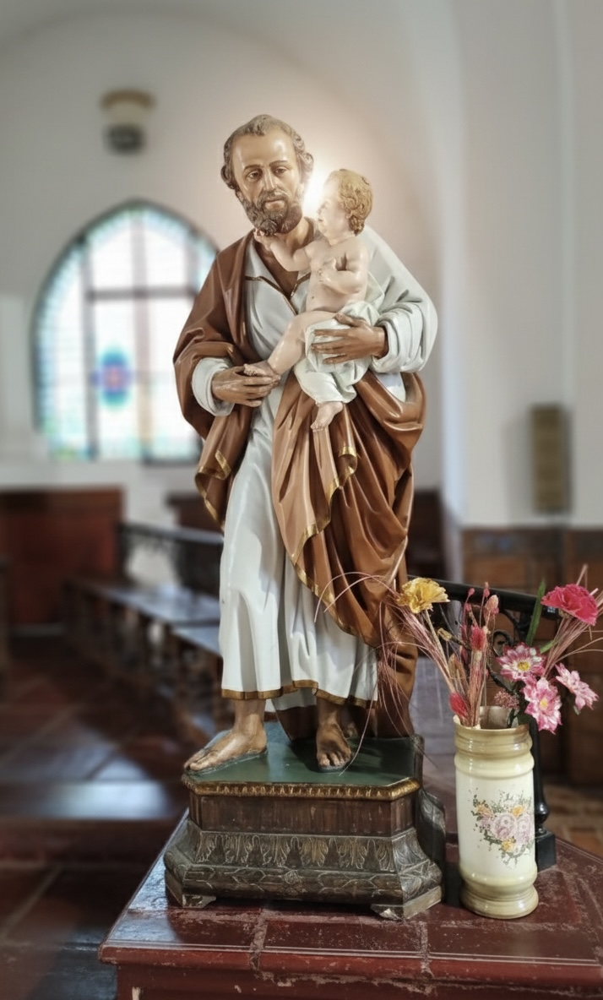

```
Parroquia Sagrado Corazón
Inicio
Sacramentos
Horarios
Ubicación
Vida Sacramental

Bautismos
✨ Los bautismos se realizan todos los domingos de cada mes.
Requisitos necesarios:
DNI del niño/a que recibirá el sacramento.
Dirección real de residencia.
Nombres completos de los padres.
Nombres completos de los padrinos.
¿Deseas solicitar una fecha? Hablá con nuestras secretarias:
💬 Chat con Jaquelina
💬 Chat con Fabiana
```